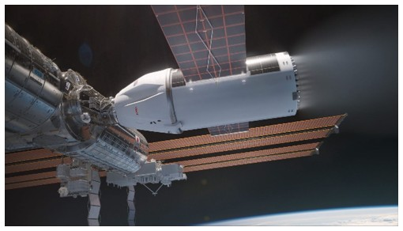

The International Space Station (ISS) has been a staple of humanity's great achievements for nearly 30 years, however it is also the most expensive at an estimated $150 billion. Meant only to last 15 years, it has been called into question as to why it is still being maintained at nearly $3 billion per year. Many plans for its decommissioning have been put forward, and in 2022 NASA finally decided on a course of action: a controlled re-entry. In simple terms, it means carefully pushing the ISS into a collision course with Earth via a booster rocket. A large amount of it will burn up harmlessly in the atmosphere, while larger parts will land in a predetermined location in the Pacific Ocean. This is not the end for human occupied space stations however, as multiple plans internationally have been put forward for newer stations, with one station already in use.

The ISS began life during the cold war collaboration between the USA and USSR. Both wanted a manned space station, yet neither had the funds to complete it on their own. As such, in November 1998 the first module of the ISS was launched into Low Earth Orbit (LEO). 2 years later, the first humans went aboard the space station. The European Space Agency, Japan and Canada also aided in constructing the ISS (ISS National Laboratory, ND).
The station proved invaluable to the scientific community due to its constant near zero gravity, a feat impossible on Earth. LEO allowed for shorter journeys between Earth and the station, while also helping to burn up micro meteorites and debris, thus helping protect the station, although larger debris has struck the station previously. LEO also comes with two main downsides - the first being that the ISS must adjust its orbit occasionally so as to not crash into the Earth, and the second being temperature. The ISS’s external temperature can go from 200°C to -200°C, 16 times a day (NASA, 2007). This constant expansion and contraction reduces the lifespan of the station. Other reasons have led to various parts of the station being replaced or upgraded, leading to the question as to why an aging station is being upgraded, when it could be easier to simply build a new one. As such, in 2022 NASA decided to decommission the ISS (King, 2022)
Decommissioning the ISS is by no means an easy task. At 110m long and 420 tonnes (NASA, 2007), many plans were put forward on how to decommission the ISS safely and cost effectively. The ISS could not be left in its current orbit, as without regularly boosting it would crash into Earth within months on a random re-entry. This would pose a major risk to both satellites and the population on Earth (NASA, 2024).
The idea of simply pushing the station into a further orbit was brought forward, with the goal of preserving the station for future use and as a potential museum, but this is largely unfeasible. It would take a huge amount of fuel using a vehicle akin to SpaceX’s Starship, the largest rocket ever launched, and would leave the station at the mercy of space. It would most likely end up breaking apart, leaving debris everywhere and potentially jeopardising future projects (NASA, 2024).
Returning the station to Earth piece by piece to be placed in a museum was also considered, however this was deemed too difficult and costly. The ISS was constructed with the help the Space Shuttles, taking 13 years, 27 flights and 161 extravehicular activities (EVAs). The last Space Shuttle flight was in 2011, and reactivating the programme would cost an unjustifiable amount of money (NASA, 2024). Instead, a controlled re-entry was chosen. The ISS will continue operations until 2030, when a Deorbit Vehicle built by SpaceX will push the ISS into a controlled re-entry, with the most likely landing spot being Point Nemo (Foust, 2024). This is the most remote location in the ocean, with the nearest land being 2,600km away. Other space debris has landed here before under a controlled re-entry, although nothing as large as the ISS (NOAA, 2021).
| Plan | Pros | Cons |
|---|---|---|
| Boost to higher orbit | Preserves the station for future use |
High cost Dangerous to future projects Boost vehicle required currently does not exist |
| Disassemble and return to Earth | Allows for reuse of parts or for display in a museum |
High cost Reintroduction of space shuttle style oribtal delivery system required |
| Random re-entry | Cheapest option | Hugely dangerous to both other satellites and population on Earth |
| Controlled re-entry |
Cheaper Safest option |
No preservation or reuse |
The idea of a manned space station is not over, however. In 2021 China started launching modules for its Tiangong space station, which is currently manned (Dobrijevic, 2023). NASA has also looked at using private contractors to build a space station, and as such in 2020 awarded Axiom Space with a contract to build the Axiom space station as early as 2028. Fittingly, the ISS will be used to help build the Axiom before it is released to orbit on its own, thus passing the torch on to the next generation of space stations (NASA, 2024). As stated before, the ISS could not be brought back piece by piece to be into a museum, however it could still be recovered. In 2013, billionaire Jeff Bezos led a team to recover the Saturn V engines used in the Apollo 11 mission - the one in which man first stepped foot on the moon - from the Pacific Ocean. The recovered pieces are now on display in the Museum of Flight in Seattle (David, 2017).